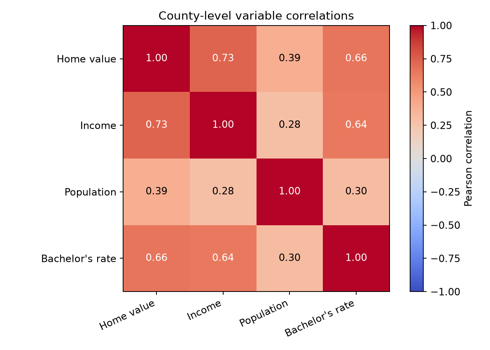
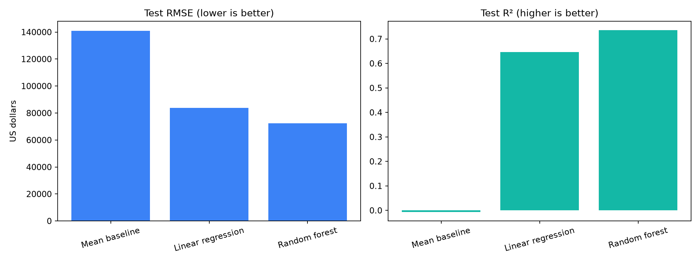
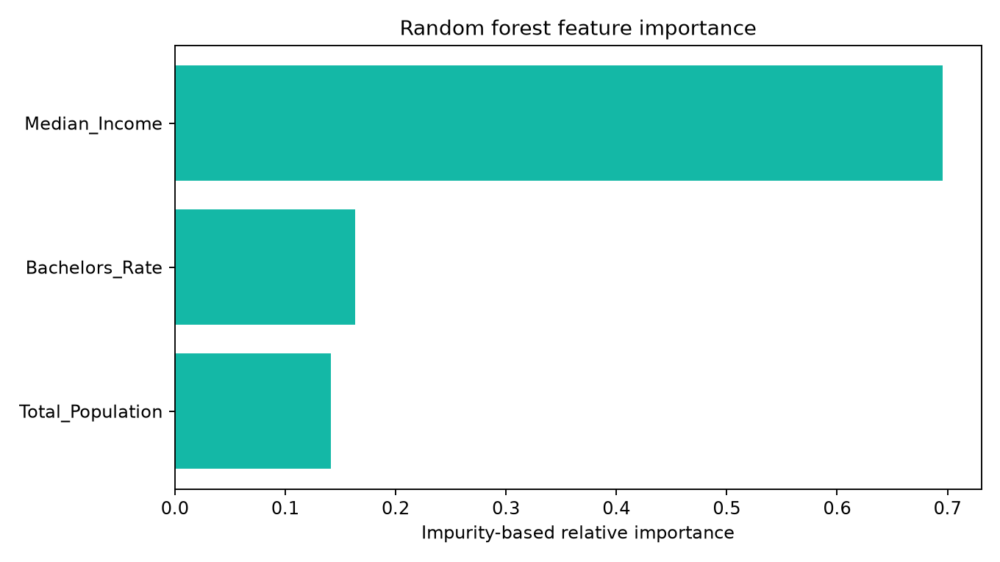
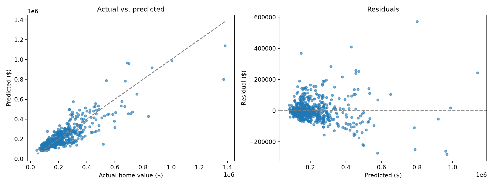

Machine Learning · Python · Census ACS
Predicting U.S. County Home Values
Comparing regression models to estimate county-level median owner-occupied home values using income, population, and education.
Project Overview
I used the U.S. Census Bureau's 2023 American Community Survey five-year estimates to explore how county characteristics relate to median owner-occupied home values. After cleaning the data, I compared a mean baseline, linear regression, and random forest regression using the same held-out test set.
The final analysis retained 3,215 counties and county equivalents, with 2,572 observations used for training and 643 for testing.
Data Preparation
The predictors were median household income, total population, and the share of adults age 25 and older with a bachelor's degree. I excluded missing and invalid Census estimates, including negative sentinel values, and calculated the education rate using the appropriate age-25-and-older denominator.

Model Performance
I used an 80/20 train-test split with a fixed random seed. Performance was measured on the held-out test set using root mean squared error (RMSE), mean absolute error (MAE), and R².
| Model | RMSE | MAE | R² |
|---|---|---|---|
| Mean baseline | $141,021 | $89,658 | -0.006 |
| Linear regression | $83,688 | $52,930 | 0.646 |
| Random forest | $72,317 | $46,711 | 0.735 |
Key result: Random forest achieved the lowest test RMSE, improving on the mean baseline by approximately 48.7%. Its R² of 0.735 indicates that it explained about 73.5% of variation in county median home values in this test set.

What Influenced the Predictions?
Median household income had the largest impurity-based feature importance in the fitted random forest. Education attainment and population contributed additional predictive information. These importance scores describe the model, not causal effects.

Prediction Diagnostics
The model captures much of the overall variation in county home values, but errors remain, especially among some higher-value counties. Reviewing residuals helps identify where predictions are less reliable.

Limitations and Next Steps
This analysis predicts county-level medians, not individual property prices. The results reflect one random train-test split and should not be interpreted as evidence of causation. Geographic holdouts, cross-validation, and additional housing supply indicators would help assess whether the model generalizes to other regions and time periods.